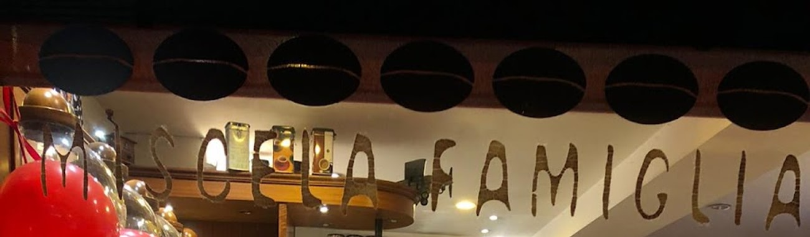

Torrefazione · Piazza Dergano 3, Milano
Il caffè,
come lo scegli tu.
Non è un bar che ti versa un espresso e via. È una bottega dove il caffè si sceglie, e te lo macinano al momento — come si faceva dal droghiere.

Il caffè
Lo scegli,
e lo macinano.
La differenza è tutta qui: il caffè non è già pronto in un sacchetto. Si sceglie al banco e lo si macina sul momento, per la moka o per la macchina, come si comprava una volta.
In cima alla vetrina c'è scritto a lettere dorate il nome della loro miscela di casa: Miscela Famiglia. È un posto che il caffè lo tratta come un prodotto, non come un gesto veloce.
«Potete scegliere il caffè che lo macinano al momento, una varietà grande di miele, cioccolati, caramelle, marmellate…»
Celia Soares, recensione Google
La dispensa
E intorno al caffè,
tutto il resto di buono.
Non si esce solo con il caffè. Sugli scaffali ci sono miele, cioccolati, tè sfusi, marmellate, biscotti, caramelle — la dispensa di quartiere che quasi non esiste più.
È anche il posto dove si trova il regalo giusto: le confezioni cambiano con le stagioni e con le feste.
Al banco
Dalle 6:30
fino all'aperitivo.
Al banco è un bar vero, dal mattino presto: cappuccino, cornetti, brioche — anche vegane — e la colazione. La sera, l'aperitivo.
Nelle recensioni il cappuccino è «uno dei più buoni provati a Milano», e c'è chi lo chiama semplicemente «il bar sotto casa» diventato «uno dei posti del cuore».
Chiama la bottegaRecensioni Google
4,5 su 230.
«È il mio posto preferito. Brioche vegane eccezionali, cappuccino di soia perfetto. Potete scegliere il caffè che lo macinano al momento, una varietà grande di miele, cioccolati, marmellate.»
Celia Soares da Silva
«Abito a Dergano da sei mesi e solo oggi sono entrata in questo bar sotto casa. Tutti super gentili. Caffè e cornetto davvero perfetti! Diventerà uno dei miei posti del cuore.»
jin
«Uno dei cappuccini più buoni provati a Milano. Le brioche sono buone con molta varietà di gusti. Hanno molti prodotti da comprare: dolci, biscotti e tè.»
Mari Yg
Dove siamo
In piazza.
Piazza Dergano 320158 Milano
- lunedì6:30–20:30
- martedì6:30–20:30
- mercoledì6:30–20:30
- giovedì6:30–20:30
- venerdì6:30–20:30
- sabato7–20:30
- domenica8–13:30
Consumazione sul posto · asporto · consegna a domicilio
La mappa è di Google: aprendola, Google riceve il tuo indirizzo IP e può usare i suoi cookie.
Domande
Si può comprare il caffè da portare a casa?
Sì: è prima di tutto una torrefazione. Si sceglie il caffè e lo si fa macinare al momento, per la moka o per la macchina.
Cosa c'è oltre al caffè?
Una dispensa: miele, cioccolati, tè, marmellate, caramelle, biscotti. E al banco brioche — anche vegane — cornetti, colazioni e l'aperitivo la sera.
Fanno colazione e aperitivo?
Sì, entrambi. Si apre alle 6:30 per la colazione e si tira dritto fino alle 20:30, aperitivo compreso.
Ci sono opzioni vegane?
Sì: nelle recensioni tornano le brioche vegane e il cappuccino di soia.
Dove siete esattamente?
In Piazza Dergano 3, affacciati sulla piazza.